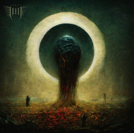

| List of Songs |
| Ashen (2023) |
1. Blood Spilled |
7. Catastrophize |
| 2. Linger |
8. Death Spiral |
| 3. Lifeless, Deathless |
9. Shell |
| 4. Withering |
10. Passage |
| 5. Instill |
11. Burden |
| 6. Labryinthian |
12. Bearer |
| Välde (2021) |
1. Dödsdans |
7. Hadean |
| 2. Glutton |
8. Tide |
| 3. Earthless |
9. Väldet |
| 4. Descent |
10. Sirens |
| 5. Spectre |
11. Futility |
| 6. Dehumanize |
12. Vittring |
| Humanity's Last Breath (Remixed & Remastered) (2020) |
1. Intro |
8. Vultus |
| 2. Bellua, Pt.1 |
9. Drone |
| 3. Bellua, Pt.2 |
10. Void |
| 4. Human Swarm |
11. Anti |
| 5. Animal |
12. Make Me Blind |
| 6. Shoals |
13. Outro |
| 7. Tellus Aflame |
|
| Abyssal (+ Instrumentals) (2019) |
1. Bursting Bowel of Tellus |
7. Like Flies |
| 2. Bone Dust |
8. Sterile |
| 3. Fradga |
9. Being |
| 4. Abyssal Mouth |
10. Vånda |
| 5. Pulsating Black |
11. Rampant |
| 6. För Sorg |
12. Dödgud |
| Detestor (+ Instrumentals) (2016) |
1. Ocean Drinker |
4. Beware |
| 2. Furvus |
5. Detestor (feat. Jessica Currys) |
| 3. Harm |
|
Structures Collapse  (2011) (2011) |
1. Product of War |
7. Never Ending Cycle |
| 2. Decievement |
8. Kneeling in Front of the Grave |
| 3. Baleful |
9. Interlude |
| 4. Righteous Death |
10. We Didn't Plan The Escape |
| 5. The Aftermath |
11. Ingested |
| 6. Inevitable |
|